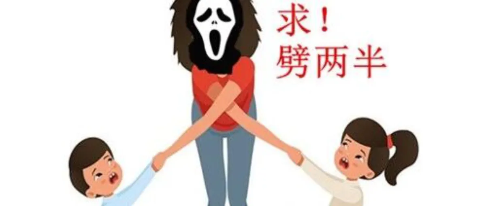
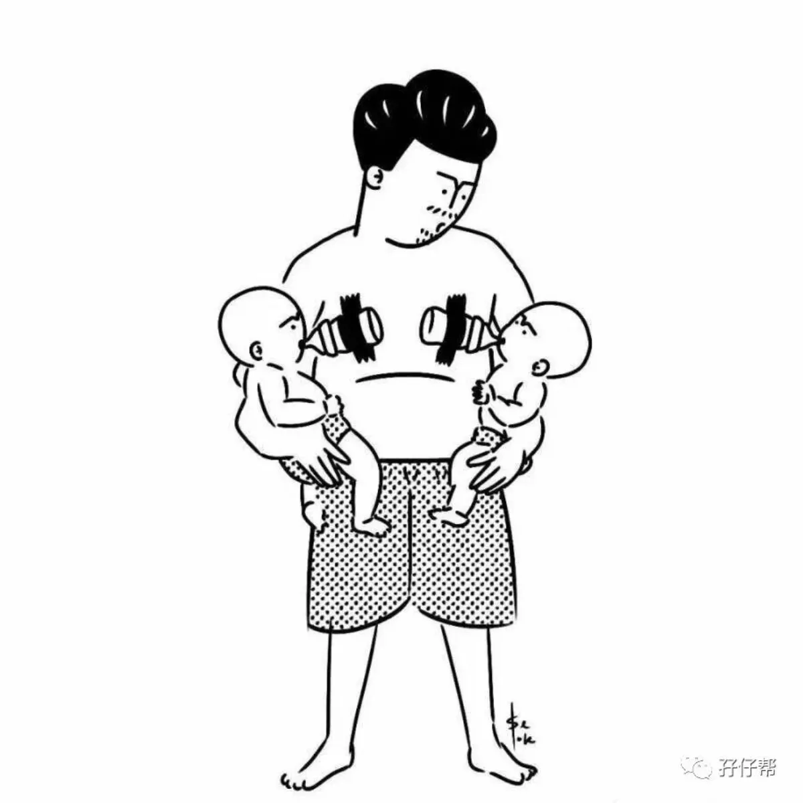
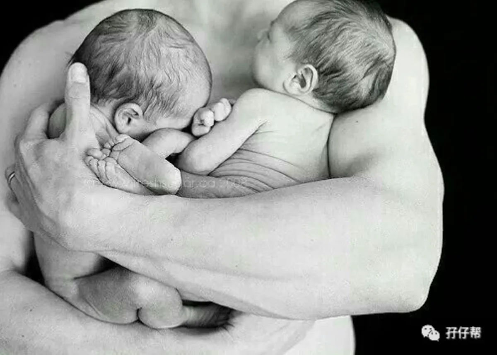
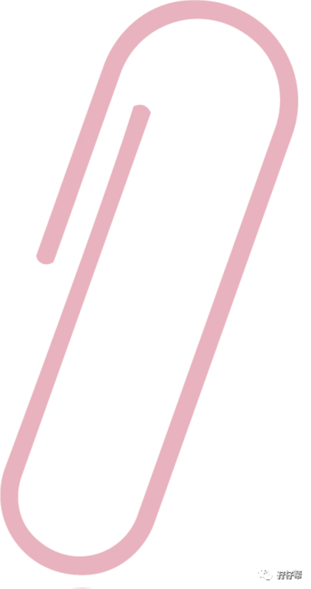
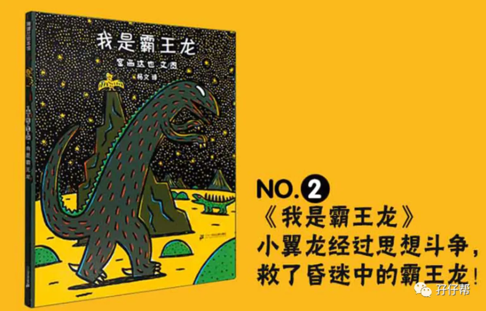
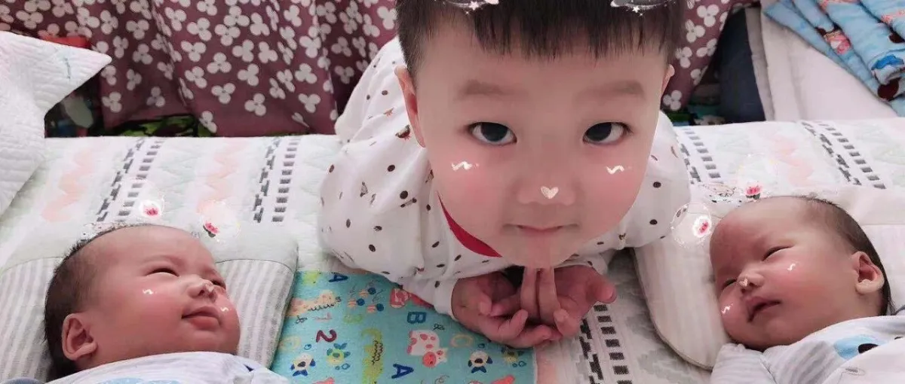
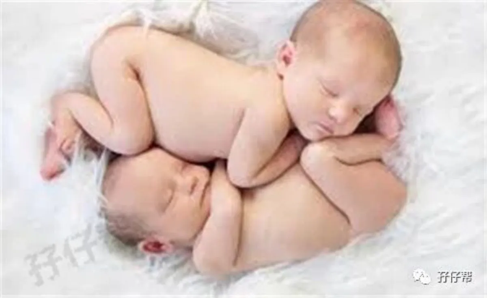
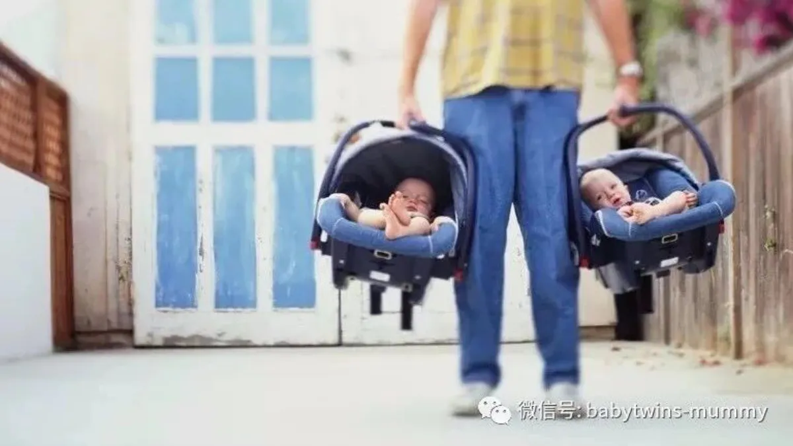

家庭与爸妈
爸爸视角、带娃人力、全职职场与家庭经济，双胎家庭的现实生存题。

双胞胎要几个人带？卧底12个妈妈群得出了答案 文|圆圈妈，一个文思如尿崩的双胎妈妈 图|来自网络，如有侵权，请联系删除 群里经常有人问双胞胎到底需要几个人带才不至于有… 2019-06-20
父亲节作证：双胞胎爸爸不是搅屎棍！ 文|圆圈妈，一个文思如尿崩的双胎妈妈 图|来自网络，如有侵权，请联系删除 爸爸， 是一种生物， 这种生物， 很特别， 多… 2019-06-16
为什么我不舔屏“别人家的奶爸” 文|圆圈妈，一个文思如尿崩的双胎妈妈 图|来自网络，如有侵权，请联系删除 【01】 人家有人家的过法，自家有自己的情况 … 2019-05-16 致敬双胞胎妈妈：燕雀安知鸿鹄之志 这个时代对女人要求很高， 如果你选择成为职业女性， 就会有人说你不顾家庭， 是个糟糕的母亲； 如果你选择成为全职妈妈， … 2019-05-12 一胎双胞胎，二胎再来双胞胎，你还敢要吗？ 文|圆圈妈，一个文思如尿崩的双胎妈妈 图|来自网络，如有侵权，请联系删除 · 正 · 文 · 来 · 啦 · 不久前 我… 2019-05-09
家有双胞胎，我要辞职带俩娃吗？ 女人的职场道路其实特别难走 刚毕业时被嫌弃没经验 好不容易有了经验 却要面临结婚生子 终于有娃了，却精力有限 家庭事业两… 2019-04-16 为什么我的双胞胎不分开养 文|圆圈妈，一个文思如尿崩的双胎妈妈 图|来自网络，如有侵权，请联系删除 · 正 · 文 · 来 · 啦 · 在与一位双… 2019-04-09
没一个孩子，逃得过宫西达也的手掌心 · 正 · 文 · 来 · 啦 · 我很喜欢给圆圈兄弟讲《我是霸王龙》这本书。 每次给他们读的时候，都是声情并茂地读着，… 2019-03-15
二胎来了双胞胎：养育3个儿子的第60天，我挺好的 这是一位二胎来了双胞胎的妈妈 前有大儿子，后有二儿子三儿子 她的后半辈子将会有四个男人为她遮风挡雨，让人羡慕不已， 但没… 2019-03-08 二胎来了双胞胎：养育三个儿子的第60天，我依然活着 我是二胎来了双胞胎的全职妈妈，目前家有三个孩子，大儿子5岁，老二老三是异卵双胞胎兄弟，已经满两个月了。 大家都说，家有三… 2019-03-08 当了21天双胞胎姐妹花的爸爸：我不痛，依然快乐着 父兮生我， 母兮鞠我。 抚我， 畜我， 长我， 育我， 顾我， 复我， -----《诗经》 图文|双胞胎奶爸 · 正 ·… 2019-03-07 一个双胞胎全职妈妈花了1258天写的2018年终总结
⬆⬆关注孖仔帮，与您分享双胞胎育儿经⬆⬆ 文|圆圈妈 一个文思如尿崩的双胎妈妈 图|来自网络 早啊，2018年的最后一天…
2018-12-31
一个双胞胎全职妈妈花了1258天写的2018年终总结
⬆⬆关注孖仔帮，与您分享双胞胎育儿经⬆⬆ 文|圆圈妈 一个文思如尿崩的双胎妈妈 图|来自网络 早啊，2018年的最后一天…
2018-12-31
 双胞胎新手爸爸的生存指南：做牛做马容易，做双胞胎爸爸难！难！难…
孖仔帮 与您分享双胞胎育儿路上的囧人囧事 点击蓝字 关注我们 文|圆圈妈 01 在孖仔帮双胞胎喂养群经常会吃到很多狗粮，…
2018-09-26
双胞胎新手爸爸的生存指南：做牛做马容易，做双胞胎爸爸难！难！难…
孖仔帮 与您分享双胞胎育儿路上的囧人囧事 点击蓝字 关注我们 文|圆圈妈 01 在孖仔帮双胞胎喂养群经常会吃到很多狗粮，…
2018-09-26
 双胞胎准爸爸的生存指南：不做猪一样的队友，活着出来喜当爹
孖仔帮 与您分享双胞胎育儿路上的囧人囧事 点击蓝字 关注我们 文|圆圈妈 01 在孖仔帮孕期群，有准妈妈管双胞胎准爸爸叫…
2018-09-19
双胞胎准爸爸的生存指南：不做猪一样的队友，活着出来喜当爹
孖仔帮 与您分享双胞胎育儿路上的囧人囧事 点击蓝字 关注我们 文|圆圈妈 01 在孖仔帮孕期群，有准妈妈管双胞胎准爸爸叫…
2018-09-19
 “妈妈，等等我有那么难吗？”一个3岁双胞胎男孩的内心独白
01 “妈妈，我要牵！” “妈妈，等等我…” “妈妈，我走累了！” “妈妈，你说话…” 不管我怎么哭泣，哀求，妈妈依然不…
2018-09-10
“妈妈，等等我有那么难吗？”一个3岁双胞胎男孩的内心独白
01 “妈妈，我要牵！” “妈妈，等等我…” “妈妈，我走累了！” “妈妈，你说话…” 不管我怎么哭泣，哀求，妈妈依然不…
2018-09-10
 那个每天晚上9点钟才到家的双胎妈妈，失业了…
“我离开JET的时候，我觉得自己没有价值了，现在也是这种感觉。公司不断发展，而我却止步不前，给大家添了不少麻烦，我能力有…
2018-09-06
王力宏，一个长得很像圆圈爸的人，三胎得子啦
01 听说我的男神三胎喜得子，真替他高兴。 前几天，孖仔帮孕期群有宝妈八卦说有一个明星终于生儿子了，当时忙于其实事情，没…
2018-08-26
那个每天晚上9点钟才到家的双胎妈妈，失业了…
“我离开JET的时候，我觉得自己没有价值了，现在也是这种感觉。公司不断发展，而我却止步不前，给大家添了不少麻烦，我能力有…
2018-09-06
王力宏，一个长得很像圆圈爸的人，三胎得子啦
01 听说我的男神三胎喜得子，真替他高兴。 前几天，孖仔帮孕期群有宝妈八卦说有一个明星终于生儿子了，当时忙于其实事情，没…
2018-08-26

双胞胎宝宝怎么睡？这样做既省钱又安全 1 孖仔帮群里经常有宝妈问双胞胎宝宝怎么睡。可以跟妈妈同床吗？要买婴儿床吗？买什么样的婴儿床呢？房间摆设要怎么布置呢？ … 2018-08-14
爆笑育儿经验分享||一位双胞胎全职奶爸的呐喊 点击上方“孖仔帮”关注我们 孖仔帮 汇集全国各地及海外的双胎妈妈的交流园地 专门针对双胎孕期，喂养，教育等方面的经验分享… 2018-07-06 吐槽|一位双胞胎全职奶爸的育儿心经 一个爸爸，决定做全职奶爸，不管什么理由，但可以肯定的是，绝对不是因为自己是“教育专家”。跟与生俱来就会照顾孩子的妈妈相比… 2018-07-06